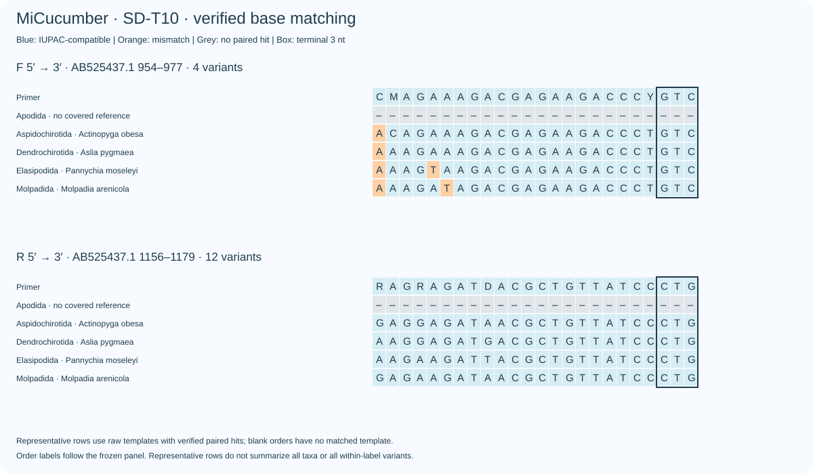
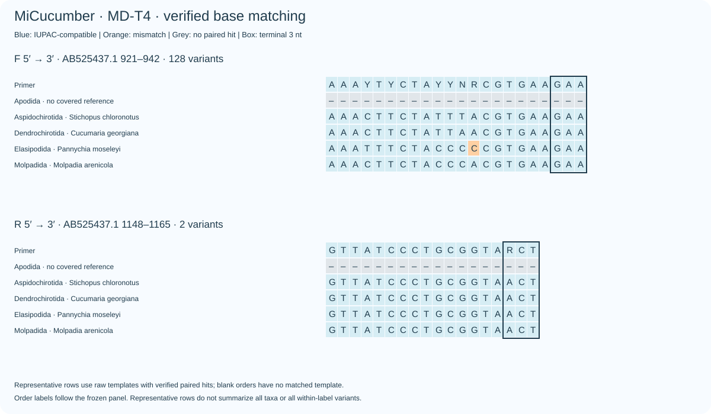
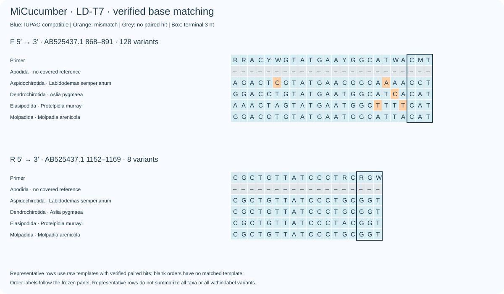
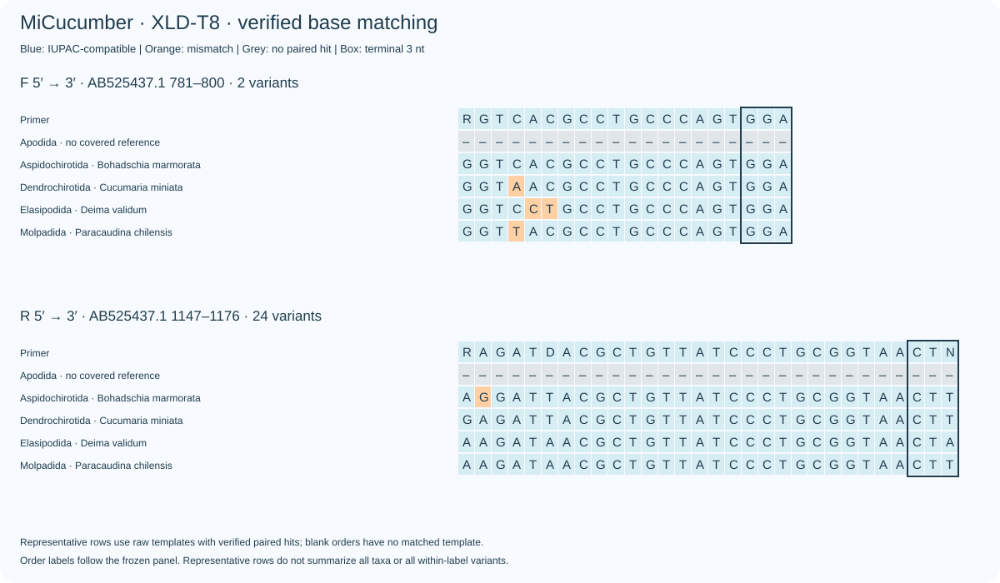

完整中英文报告 / Full bilingual report · All verified candidates
分类群覆盖主指标包含Apodida，对5个冻结目标签等权；并非现生七目评估。已将四个首选候选更新为当前D方案。/ Coverage balances five frozen order labels including Apodida; selected source candidates now map to current D assays.
| Candidate | Order coverage | Order exact | Strict WC/GT |
|---|---|---|---|
| SD-T1 | 62.03% | 1.47% | 2/4 |
| SD-T2 | 64.57% | 2.17% | 19/29 |
| MD-T3 | 68.99% | 38.94% | 0/15 |
| MD-T4 | 73.18% | 29.72% | 2/9 |
| MD-T5 | 75.33% | 29.18% | 3/7 |
| LD-T6 | 55.35% | 17.03% | 0/0 |
| LD-T7 | 61.62% | 15.99% | 0/0 |
| XLD-T8 | 35.95% | 4.00% | 0/7 |
| XLD-T9 | 35.95% | 4.65% | 0/20 |
| SD-T10 | 66.03% | 4.95% | 3/6 |



